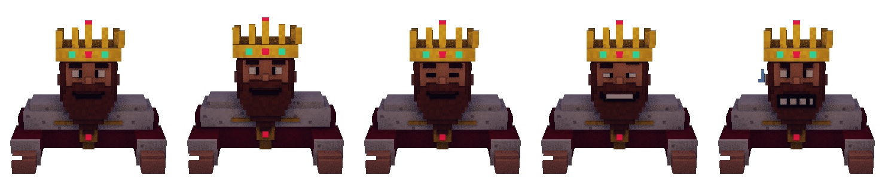

Primitives
King dealer
Five voxel frames rendered from the same camera as the hall, so he drops onto the stage without any offset.

Reactions
Idle loopidle 1.6s → breath 1.6s, with a blink every ~4s
SmugHeld 1.2s, then back to the loop
GrimaceHeld 1.2s, then back to the loop
Boss hitCurrent frame + filter: brightness(2) sepia(1) for 2 × 140ms, while .gh-boss shakes
DefeatedGrimace held for the whole bonus banner
With reduced motion: idle only, reactions swap frames without the flash.
Sprite sheet

5 frames in a row: idle · breath · blink · smug · grimace
296×308 · MOBILE 468×484
.gh-king { background: url(king-sheet.png) 0 0 / 500% 100%;
animation: gh-king-idle 4s steps(1) infinite; }
.gh-king.is-smug { animation: none; background-position: 75% 0; }
.gh-king.is-grimace { animation: none; background-position: 100% 0; }
Position on the stage
left 39.722%
top 14.444%
width 20.556%
height 38.025%
Layer order: far hall, table, king, foreground. The table already masks his robe.